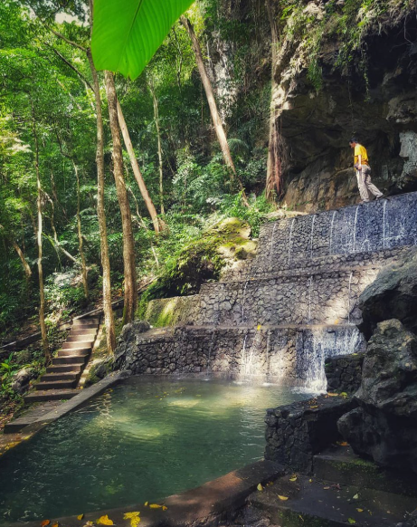
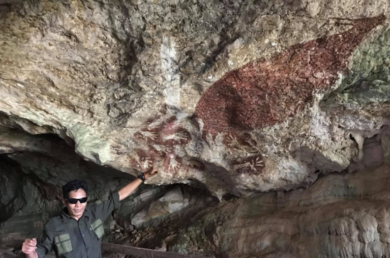
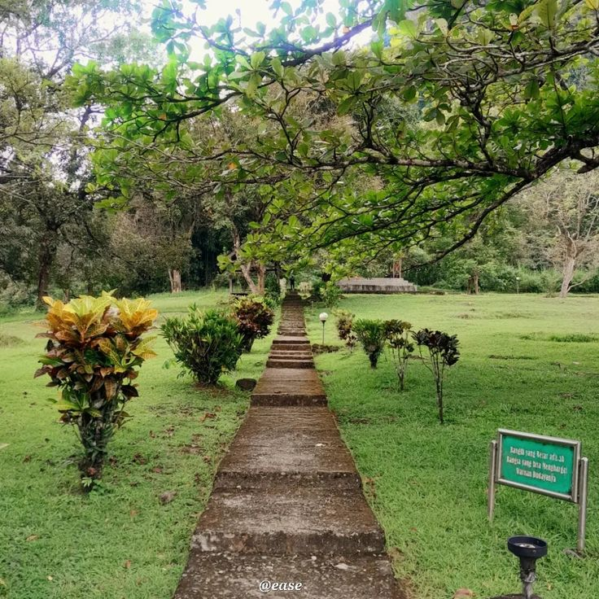
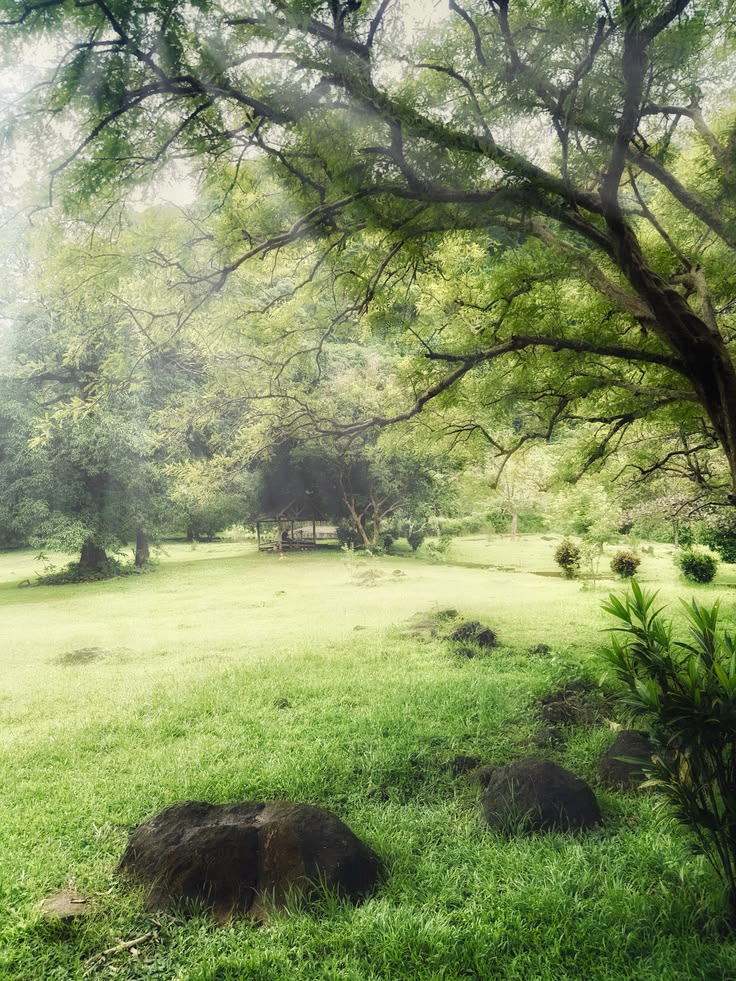
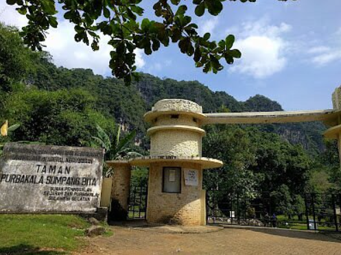

Sumpang Bita merupakan kawasan wisata yang memiliki nilai sejarah dan prasejarah di Kabupaten Pangkajene dan Kepulauan, Sulawesi Selatan.. Kawasan ini memiliki gua prasejarah dengan peninggalan berupa lukisan cadas dan berbagai tinggalan arkeologis. Selain nilai sejarah, Sumpang Bita juga menawarkan suasana alam yang asri dengan kawasan hijau, kolam mata air alami, serta area yang dapat dimanfaatkan untuk bersantai dan berpiknik.
Beberapa gambar dari lokasi Sumpang Bita:




Berikut adalah beberapa aktivitas yang dapat dilakukan di Sumpang Bita:
Sumpang Bita terletak di Kabupaten Pangkajene dan Kepulauan, Sulawesi Selatan. Lokasinya dapat diakses melalui jalan darat dan memiliki fasilitas parkir yang memadai.

| Informasi | Keterangan |
|---|---|
| Nama | Taman Purbakala Sumpang Bita |
| Lokasi | Kabupaten Pangkajene dan Kepulauan, Sulawesi Selatan. |
| Jenis Wisata | Sejarah, prasejarah, dan alam. |